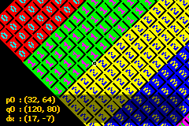

12. 仿射背景
简介
本节讲解仿射背景：也就是你可以通过 P 矩阵施加仿射变换的那些背景。而它也就仅此而已。如果你还没读——并且理解！——精灵/背景概述以及关于常规背景和仿射变换矩阵的章节，请先去读那些再继续。
如果你知道如何构建常规背景，并且理解了仿射矩阵背后的概念，那么这里你应该没什么问题。仿射背景在理论层面与常规背景相同，但在若干非常关键的实践要点上会有所不同。举例来说，你使用的是不同的定位寄存器，而且它们的地图布局及其格式也各不相同。
GBA 拥有的四个背景中，只有最后两个能用作仿射背景，并且仅限于特定的视频模式（见 table 12.1）。仿射背景的尺寸也与常规背景不同。你可以在 table 12.2 中找到尺寸列表。
|
|
仿射背景寄存器
与常规背景一样，仿射背景的主要控制寄存器是 REG_BGxCNT。如果你忘了它的作用，可以读这里的描述。与常规背景的差异在于尺寸，以及 BG_WRAP 现在真正起作用了。其它重要的寄存器是位移向量 dx（REG_BGxX 和 REG_BGxY），以及仿射矩阵 P（REG_BGxPA–REG_BGxPD）。你可以在 table 12.3 中找到它们的地址。
| Register | length | address |
|---|---|---|
| REG_BGxCNT | 2 | 0400:0008h + 2·x |
| REG_BGxPA-PD | 2 | 0400:0020h + 10h·(x-2) |
| REG_BGxX | 4 | 0400:0028h + 10h·(x-2) |
| REG_BGxY | 4 | 0400:002ch + 10h·(x-2) |
在处理仿射背景的位移和变换时，有几点需要留意。首先，位移 dx 使用的是与常规背景不同的寄存器：REG_BGxX 和 REG_BGxY，而不是 REG_BGxHOFS 和 REG_BGxVOFS。第二点是，它们是 24.8 格式的定点数，而非像素偏移量。（实际上它们是 20.8 定点数，不过眼下这不重要。）
我通常通过 BG_AFFINE 结构体来使用仿射参数，而非 REG_BGxPA 等。tonc_memmap.h 中的内存映射为此提供了一个 REG_BG_AFFINE。以这种方式设置寄存器有时更有优势，因为你通常已经准备好了一个 BG_AFFINE 结构体，然后只需一次赋值就能把它复制到寄存器。下面给出一个例子。
仿射变换矩阵 P 的元素，其工作方式与仿射精灵完全相同：它们是 8.8 格式的定点数，描述从屏幕空间到纹理空间的变换。不过对于仿射背景，它们是连续存放的（偏移 2 字节），而精灵的那些则是以 8 字节为偏移。你可以使用 tonc_bg_affine.c 中的 bg_aff_foo 函数来把它们设为你想要的变换。
typedef struct tagBG_AFFINE
{
s16 pa, pb;
s16 pc, pd;
s32 dx, dy
} ALIGN4 BG_AFFINE;
//! BG affine params array
#define REG_BG_AFFINE ((BG_AFFINE*)(REG_BASE+0x0000))
// Default BG_AFFINE data (tonc_core.c)
const BG_AFFINE bg_aff_default= { 256, 0, 0, 256, 0, 0 };
// Initialize affine registers for bg 2
REG_BG_AFFINE[2] = bg_aff_default;
常规 vs 仿射图块地图的滚动
仿射图块地图使用的是不同的滚动寄存器！它们用的是 REG_BGxX 和 REG_BGxY，而不是 REG_BGxHOFS 和 REG_BGxVOFS。而且，这些是 32 位的定点数，而非半字。
仿射背景的定位与变换
既然我们知道了位移和变换寄存器是什么，现在就来看看它们的作用。这实际上比你可能以为的要棘手得多，所以请集中注意力。警告：接下来又要进入数学了。
位移向量 dx 的作用与常规背景相同：dx 包含被映射到屏幕原点的那些背景坐标。（而不是相反！）不过这一次 dx 是以定点数记法表示的。同样地，仿射变换矩阵 P 的作用也与仿射精灵相同：P 描述从屏幕空间到纹理空间的变换。用数学语言表达，如果我们定义
| (12.1a) |
T(dx)p := p + dx T−1(dx) = T(−dx) |
| (12.1b) | P = A−1 |
那么
| (12.2a) | T(dx)q = p |
| (12.2b) | P · q = p |
其中
| p | 是纹理空间中的一个点， |
|---|---|
| q | 是屏幕空间中的一个点， |
| dx | 是位移向量（REG_BGxX 和 REG_BGxY）。 |
| A | 是从纹理空间到屏幕空间的变换， |
| P | 是从屏幕空间到纹理空间的变换（REG_BGxPA–REG_BGxPD）。 |
eq 12.2 的问题在于，它们只描述了当你单独使用位移或变换时会发生什么。那么如果你两者都要用呢？这是一个重要的问题，因为变换的顺序是有影响的（就像我们在仿射精灵演示中看到的那样），而变换与位移的先后顺序同样如此。事实证明，平移是先做的：
| (12.3) |
|
换一种说法：变换始终以屏幕的左上角作为自己的原点，而位移则告诉你哪个背景像素被放到那里。当然，这种安排在你想要围绕屏幕上某个其它点旋转时没什么帮助。要做到这一点，你得玩几个小花招。为了一次性把它们都涵盖，我们把 eq 12.3 与一般的坐标准换等式合并起来：
| (12.4) |
|
那么，这玩意儿到底是什么意思？它的意思是：如果你把这个 dx 用作位移向量，你就是围绕纹理点 p0 进行变换，而该点最终会出现在屏幕点 q0 上；其中的 P·q0 项，是你在纹理空间中必须施加的修正量，目的是让旋转中心落在 q0 而非 (0,0)。所以——这玩意儿到底是什么意思？它的意思是：在你打算使用这些东西之前，应该先想清楚你实际想要达成的是什么效果，并且你要面对的是两套坐标系，而不是一套。想清楚之后，eq 12.4 的含义就会变得显而易见。无论如何，我所使用的函数是 bg_rotscale_ex()，它大体上长这样：
typedef struct tagAFF_SRC_EX
{
s32 tex_x, tex_y; // 向量 p0：纹理空间中的原点（24.8f）
s16 scr_x, scr_y; // 向量 q0：屏幕空间中的原点（16.0f）
s16 sx, sy; // 缩放量（8.8f）
u16 alpha; // 逆时针角度（[0,0xFFFF] 内的整数）
} ALIGN4 AFF_SRC_EX;
void bg_rotscale_ex(BG_AFFINE *bgaff, const AFF_SRC_EX *asx)
{
int sx= asx->sx, sy= asx->sy;
int sina= lu_sin(asx->alpha), cosa= lu_cos(asx->alpha);
FIXED pa, pb, pc, pd;
pa= sx*cosa>>12; pb=-sx*sina>>12; // .8f
pc= sy*sina>>12; pd= sy*cosa>>12; // .8f
bgaff->pa= pa; bgaff->pb= pb;
bgaff->pc= pc; bgaff->pd= pd;
bgaff->dx= asx->tex_x - (pa*asx->scr_x + pb*asx->scr_y);
bgaff->dy= asx->tex_y - (pc*asx->scr_x + pd*asx->scr_y);
}
这与偏心对象变换一节中讲到的 obj_rotscale_ex() 函数非常相似。数学是一样的，只是各项被稍微重新排布了一下。背景版本实际上更简单，因为仿射偏移修正可以在纹理空间中完成，而不必在屏幕空间中，这意味着无需去折腾 P 的逆矩阵。也无需处理精灵尺寸修正（多亏了 IPU）。作为记录，是的，你可以直接把这个函数用到 REG_BG_AFFINE 上。
内部参考点寄存器
关于位移和变换寄存器，还有一件重要的事要提。下面直接引用 GBATEK（方括号里的部分除外）：
上述参考点［即位移寄存器］会在每次 VBlank 期间被自动复制到内部寄存器，指定了第一条扫描线的原点。随后，这些内部寄存器会在每条扫描线之后，由 dmx［
REG_BGxPB］和 dmy［REG_BGxPD］递增。
注意：在 VBlank 期间之外，由软件写入某个参考点寄存器，会立即把新值复制到相应的内部寄存器，也就是说：在当前这一帧中，新值指定的是当前扫描线的原点（而非最顶上的那条扫描线）。
通常这不会对你造成影响，但如果你试图在 HBlank 期间写入 REG_BGxY，事情可能就不会如你所愿。这是我在尝试让我的 Mode 7 代码跑起来时，付出了代价才学到的。不过这只影响仿射背景；常规背景使用的是其它寄存器。
映射格式
仿射背景的地图布局与屏幕项，都与常规背景大不相同。讽刺的是，它们其实也要简单得多。常规背景会把整张地图切分为四个象限（每个使用一个完整的屏幕块），而仿射背景使用的是扁平（flat）地图，这意味着用于取得屏幕项编号 n 的常规等式仍然成立，从而让事情简单了一大截。
| (12.5) | n = tx + ty·tw |
屏幕项本身也与常规背景的不同。在仿射地图中，它们是1 字节长，并且只包含要使用的图块索引。此外，你只能使用 256 色图块。这让你能访问基础字符块（charblock）里的所有图块，却访问不到它后面的那些。
大致上也就这些了。不，等等还有一件事：在填充或更改地图时要小心，因为 VRAM 每次只能以 16 或 32 位的方式访问。所以，如果你的地图存放在一个字节数组中，你得先把它转换成 u16 或 u32。或者使用 DMA。好，我讲完了。
常规 vs 仿射图块地图的映射差异
常规地图与仿射地图的格式有两个重要区别。首先，仿射屏幕项仅仅是一个单字节的图块索引。其次，仿射地图使用的是线性布局，而非更大的常规地图所采用的、被切分为 32×32t 地图的那种布局。
sbb_aff 演示程序

Fig 12.1: sbb_aff 演示程序。sbb_aff 之于仿射背景，就如同 sbb_reg 之于常规背景，只是多了一些额外内容。这个演示程序使用一张 64×64 图块的仿射背景，如 fig 12.1 所示。它被分成 16 个各 256 字节的部分，每一部分都用一种颜色的图块填满，并标有该部分的编号。现在，如果仿射背景的地图布局和常规背景相同，那么每个部分会形成一块 16×16t 的正方形。如果它是扁平的内存布局，那么每个部分就是一条 64×16t 的条带。正如你在 fig 12.1 中看到的那样，是后者。你还可以看到，与常规背景不同，这张地图在边缘处并不会自动环绕。
这个演示程序最有趣的地方，是那些小小的黑白十字准星。白色十字准星指示的是旋转点（锚点）。正如我之前所说，你不能简单地挑一个地图点 p0 然后说它就是“那个”旋转点。嗯，你可以这么做，但它不会给出想要的效果。仅仅使用一个地图点，会给你一个围绕该点旋转地图的效果，但在屏幕上它永远会待在左上角。要把地图锚点移动到屏幕上的特定位置，你还需要在那里放一个锚点。这就是 q0。把两者都代入 eq 12.4，就能求出你需要的位移向量：dx = p0−P·q0。这个 dx 会与 p0 和 q0 都大不相同。它的路径由黑色十字准星标出。
这个演示程序让你可以同时控制 p0 和 q0。当然还有旋转和缩放。完整的控制列表如下。
| D-pad | 移动地图旋转点，p0 |
|---|---|
| D-pad + A | 移动屏幕旋转点，q0 |
| L,R | 旋转背景。 |
| B(+Se) | 放大和缩小。 |
| St | 切换环绕标志。 |
| St+Se | 重置锚点和 P |
#include <stdio.h>
#include <tonc.h>
#include "nums.h"
#define MAP_AFF_SIZE 0x0100
// --------------------------------------------------------------------
// GLOBALS
// --------------------------------------------------------------------
OBJ_ATTR *obj_cross= &oam_mem[0];
OBJ_ATTR *obj_disp= &oam_mem[1];
BG_AFFINE bgaff;
// --------------------------------------------------------------------
// FUNCTIONS
// --------------------------------------------------------------------
void win_textbox(int bgnr, int left, int top, int right, int bottom, int bldy)
{
REG_WIN0H= left<<8 | right;
REG_WIN0V= top<<8 | bottom;
REG_WIN0CNT= WIN_ALL | WIN_BLD;
REG_WINOUTCNT= WIN_ALL;
REG_BLDCNT= (BLD_ALL&~BIT(bgnr)) | BLD_BLACK;
REG_BLDY= bldy;
REG_DISPCNT |= DCNT_WIN0;
tte_set_margins(left, top, right, bottom);
}
void init_cross()
{
TILE cross=
{{
0x00011100, 0x00100010, 0x01022201, 0x01021201,
0x01022201, 0x00100010, 0x00011100, 0x00000000,
}};
tile_mem[4][1]= cross;
pal_obj_mem[0x01]= pal_obj_mem[0x12]= CLR_WHITE;
pal_obj_mem[0x02]= pal_obj_mem[0x11]= CLR_BLACK;
obj_cross->attr2= 0x0001;
obj_disp->attr2= 0x1001;
}
void init_map()
{
int ii;
memcpy32(&tile8_mem[0][1], nums8Tiles, nums8TilesLen/4);
memcpy32(pal_bg_mem, numsPal, numsPalLen/4);
REG_BG2CNT= BG_CBB(0) | BG_SBB(8) | BG_AFF_64x64;
bgaff= bg_aff_default;
// fill per 256 screen entries (=32x4 bands)
u32 *pse= (u32*)se_mem[8];
u32 ses= 0x01010101;
for(ii=0; ii<16; ii++)
{
memset32(pse, ses, MAP_AFF_SIZE/4);
pse += MAP_AFF_SIZE/4;
ses += 0x01010101;
}
}
void sbb_aff()
{
AFF_SRC_EX asx=
{
32<<8, 64<<8, // Map coords.
120, 80, // Screen coords.
0x0100, 0x0100, 0 // Scales and angle.
};
const int DX=256;
FIXED ss= 0x0100;
while(1)
{
vid_vsync();
key_poll();
// dir + A : move map in screen coords
if(key_is_down(KEY_A))
{
asx.scr_x += key_tri_horz();
asx.scr_y += key_tri_vert();
}
else // dir : move map in map coords
{
asx.tex_x -= DX*key_tri_horz();
asx.tex_y -= DX*key_tri_vert();
}
// rotate
asx.alpha -= 128*key_tri_shoulder();
// B: scale up ; B+Se : scale down
if(key_is_down(KEY_B))
ss += (key_is_down(KEY_SELECT) ? -1 : 1);
// St+Se : reset
// St : toggle wrapping flag.
if(key_hit(KEY_START))
{
if(key_is_down(KEY_SELECT))
{
asx.tex_x= asx.tex_y= 0;
asx.scr_x= asx.scr_y= 0;
asx.alpha= 0;
ss= 1<<8;
}
else
REG_BG2CNT ^= BG_WRAP;
}
asx.sx= asx.sy= (1<<16)/ss;
bg_rotscale_ex(&bgaff, &asx);
REG_BG_AFFINE[2]= bgaff;
// the cross indicates the rotation point
// (== p in map-space; q in screen-space)
obj_set_pos(obj_cross, asx.scr_x-3, (asx.scr_y-3));
obj_set_pos(obj_disp, (bgaff.dx>>8)-3, (bgaff.dy>>8)-3);
tte_printf("#{es;P}p0\t: (%d, %d)\nq0\t: (%d, %d)\ndx\t: (%d, %d)",
asx.tex_x>>8, asx.tex_y>>8, asx.scr_x, asx.scr_y,
bgaff.dx>>8, bgaff.dy>>8);
}
}
int main()
{
init_map();
init_cross();
REG_DISPCNT= DCNT_MODE1 | DCNT_BG0 | DCNT_BG2 | DCNT_OBJ;
tte_init_chr4_b4_default(0, BG_CBB(2)|BG_SBB(28));
tte_init_con();
win_textbox(0, 8, 120, 232, 156, 8);
sbb_aff();
return 0;
}